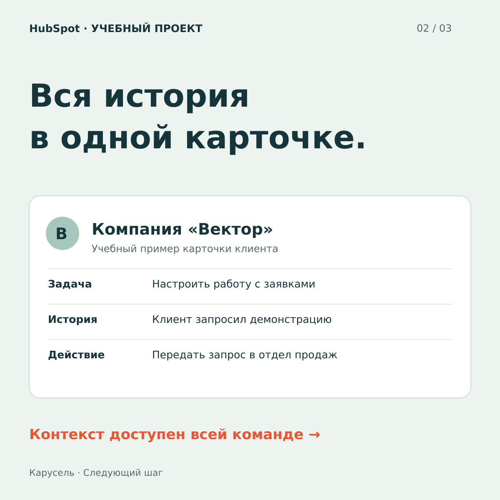
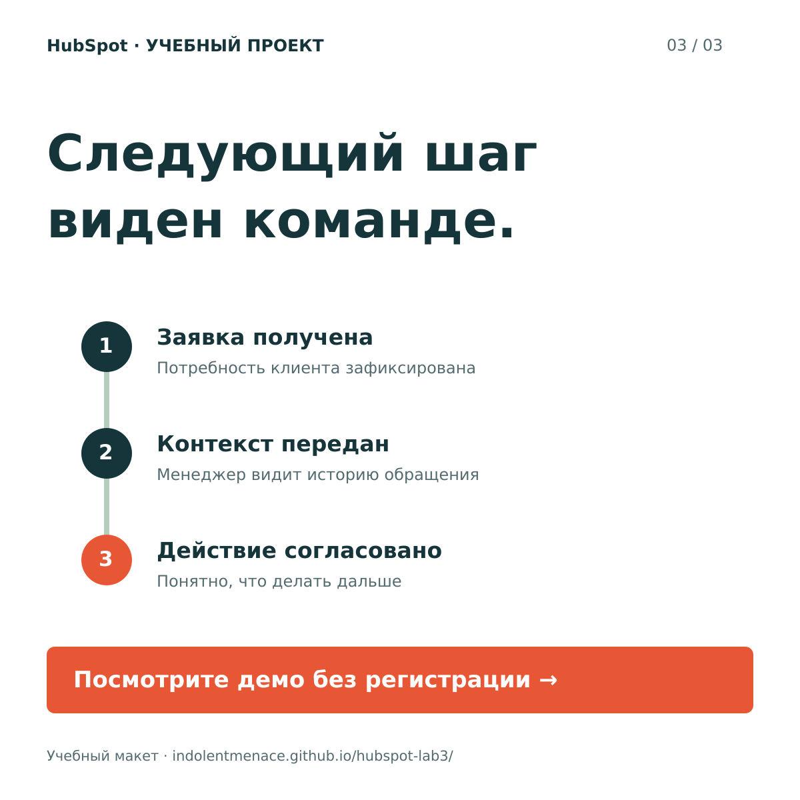

01 / СТАТИЧНЫЙ БАННЕР
Общая история клиента
Одно сообщение для быстрого просмотра: маркетинг и продажи работают с общим контекстом. Размер — 1200 × 1200.

ЭТАП 1 · ТАРГЕТИРОВАННАЯ РЕКЛАМА
Статичный баннер, карусель и видеоролик. Каждый креатив раскрывает предложение HubSpot своим способом. Все тексты — на русском.
01 / СТАТИЧНЫЙ БАННЕР
Одно сообщение для быстрого просмотра: маркетинг и продажи работают с общим контекстом. Размер — 1200 × 1200.
02 / КАРУСЕЛЬ
Три карточки 1200 × 1200: проблема → решение → призыв посмотреть демо. Листайте кнопками или смахивайте на телефоне.



03 / ВИДЕОРОЛИК
Анимированный ролик: разрозненные записи собираются в общую историю, заявка проходит между отделами, затем появляется приглашение на демо. Длительность — 15 секунд, размер — 1280 × 720. Русские титры, без звука.
Учебные рекламные материалы. Баннер и карточки созданы в SVG; ролик — программная анимация, экспортированная в MP4. Исходники доступны по ссылкам.